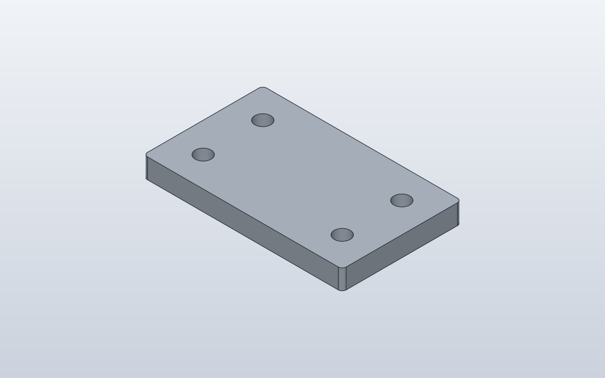

Native verified
Plate
A rounded plate with four holes
100 × 60 × 10 mm; four Ø8 mm holes
Explore model →Explore ten CAD designs and their construction stages. Python SCPF emits native SolidCraft commands; SolidCraft creates the final BRep model.
New to SCPF? Open the SCPF cheatsheet for 2D/3D primitives, operations and examples.
Each model has its Python source, generated command JSON and a readable operation timeline. Native-verified models also provide a clearly marked external link to the official SolidCraft website and a downloadable editable .sc design. Nothing from the external CAD application loads automatically on this site. PR previews may show existing main renders for reference, explicitly labelled as not verified for the PR revision.
17 models 17 matching native screenshots
Small, transparent models used to develop and verify SCPF features.

A rounded plate with four holes
100 × 60 × 10 mm; four Ø8 mm holes
Explore model →One source vent repeated by a native 6 × 3 feature pattern
120 × 80 × 4 mm; R8; 6 × 3 vents; 16 × 22 mm pitch
Explore model →A simple flange built from cylinders and native hole features
Ø100 × 26 mm overall; Ø44 hub; Ø24 bore; 6 × Ø9 on 70 mm PCD
Explore model →A box, sphere and three crossing bores
50 mm cube; three crossing cylindrical cuts
Explore model →An L-shaped extrusion with two mounting holes
60 mm wide; 6 mm wall; two Ø8 mm holes
Explore model →Original four-sketch history: Base, Holes, Boss, Bore
80 × 50 × 8 mm; R6; Ø24 × 14 boss
Explore model →A shelled enclosure with native plastic design features
80 × 50 × 30 mm; 2 mm wall; two Ø7 × 12 bosses
Explore model →Raspberry Pi 4 case with connectors, vents and engraving
95 × 66 × 24 mm; R5; PETG; 4 × M2.5 standoffs
Explore model →Reusable physical parts compiled directly from the same source assemblies import.
24 mm plywood corner bracket without mounting holes
24 mm width, 12 mm wall, 60 mm arms; no screw holes
Explore model →One measured reusable P5 HUB75 panel component
159.70 × 319.71 × 14.50 mm; six Ø3 holes; direct shared component root
Explore model →Passive 20 mm MFT bench dog with a four-segment flex stem
20.0 mm nominal hole; Ø20.2 mm flared flex tip; Ø24 × 3 mm rim; 20 mm above and 20 mm below worktop
Explore model →Parametric guide rail using the detailed Festool reference extrusion
184.20 × 10.50 mm profile; 600 mm standalone example; editable length
Explore model →The same GuideRail component with the Makita 199141-8 profile
182.50 × 10.28 mm profile; 600 mm standalone example
Explore model →Full designs and nested native assemblies built from reusable components.
805 × 555 mm reusable worktop with a 9 × 7 dog-hole grid and eight native clamp slots
805 × 555 × 18 mm; 59 × Ø20; nominal 9 × 7 at 76 mm; 8 Slots ≈104 × 24 mm
Explore model →Reusable Simple MFT worktop with an 800 mm Festool-profile GuideRail
805 × 555 mm worktop; shared worktop thickness 18 mm; Festool GuideRail 800 mm
Explore model →Five shared native HUB75 occurrences with two 180° rotations
Five 159.70 × 319.71 × 14.50 mm panels; X pitch 160 mm
Explore model →Parametrized 12 mm plywood box, eight brackets and one GlassStrip type
Outer 868 × 386 mm; 12 mm ply, 9 mm rear; roof 10/1 mm overhang; eight brackets
Explore model →Use a plain Python class and a build() method, without a mandatory show() and with an explicit return.
SCPF outputs native SolidCraft commands, with named parameters and a sequence of CAD operations.
The SolidCraft engine creates editable geometry, and CI validates its results. CAD and verification assets are only published when they match the source revision.
Review the command timeline, native measurements and optional rendered preview. An unverified model is labelled as such.
Catalog source revision: 16ced15cf3693212b91dc2048ba68ce30931902c
Current SCPF dependency: 5b4963f25f76c4e3b09926d691251ed1b1e7173b
Current SCPC dependency: fcaa6f9fc8388bc715fcd2fbb149ce6b979566a7
Each native model page records the exact Forge, SolidCraft and source revision used for that model.